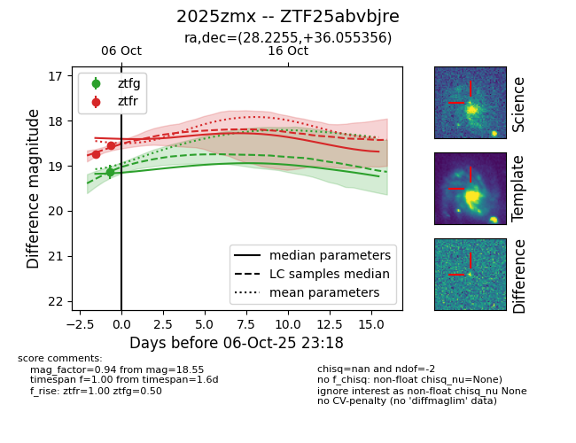
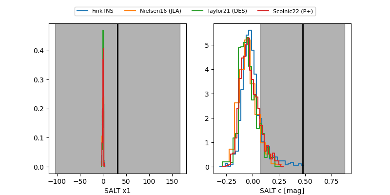

FINK: ZTF25abvbjre
Lasair: ZTF25abvbjre
ALeRCE: ZTF25abvbjre
TNS: 2025zmx
YSE: 2025zmx
ZTF25abvbjre (ztf,fink)
2025zmx (tns,yse)
equatorial (ra, dec) = (28.2255,+36.05536)
galactic (l, b) = (136.6246,-25.17677)


last ztfg=19.13, ztfr=18.55
1 ztfg, 2 ztfr detections